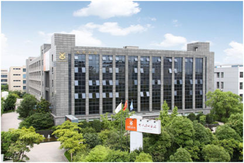
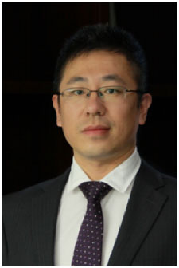
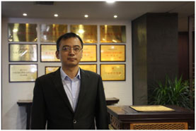
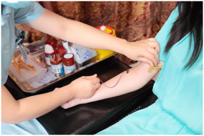

随着中国慢性患病率和致死率不断攀升，“健康中国”战略在“十三五”规划中呼之已出，同时中央政府将大力扶持健康产业的全面发展，旨在实现人人享有未来健康的保障。来自健康产业链中高端奢侈免疫保健的中赢细胞银行，依靠生命方舟品牌的多年蓄力，力图通过NK细胞体外定向扩增专利技术，实现延缓衰老、提升人体免疫力、预防癌症的功效，书写细胞免疫保健新篇章!

中赢细胞银行办公楼
你选择医学公认，还是天价谎言? 今年4月，瑞士叫停羊胎素让有关羊胎素的负面新闻不胫而走，甚至有媒体公开宣称羊胎素是“天价的谎言”，与之相比，中赢细胞银行携新一代革命性的生命科学技术在北京的高调亮相，似乎重新燃起了人们对于保健美容市场的信心。

中赢细胞银行首席技术执行官 王冶陶博士
据日本金泽大学癌研究所肿瘤分子情报学的医学博士，中赢细胞银行首席技术执行官王冶陶介绍，NK细胞被医学界誉为“人体抵御外界侵害的第一道防线”，在保持机体健康过程中扮演着重要角色。它对于有害细胞具有广谱性杀伤的能力，可以有效杀伤、清除有害细胞、衰老细胞、病毒等异物，而不会伤害自身健康的细胞，这也是医学界所公认的。早在30年前，它就因此被用来治疗血液病与恶性肿瘤疾病，中赢细胞银行正是利用这样的特性，将NK细胞融入到癌症的预防与抗衰老美容保健当中。

中赢细胞银行的专家正在提取NK细胞
相反，羊胎素却并未得到学术界的普遍承认。甚至，一些不良商家为了让它的效果更加真实明显，还会在其中注入另外一些激素，这些激素虽然会对人体起到一个短期的抗衰老效果，但由此产生的副作用却非常大。而中赢细胞银行采用的NK细胞则是完全出自人体自身，不会产生副作用，而且会随着自然代谢被排出体外，人体的免疫系统继续照常工作，不会因此产生依赖性。 NK细胞引领健康保障 免疫保健或成新宠 NK细胞是机体重要的免疫细胞，但数量却相当稀少，且大部分属于非活化的状态。为提高机体NK细胞的数量与活性，中赢细胞银行专家团队首席科学家，美国杨百翰大学生物化学博士徐以兵通过多年研究，终于获得IL-21跨膜NK细胞体外定向扩增活化技术的国内外双项专利，可以使NK细胞在短期内扩增到万倍以上，纯度达到90%以上，活性及杀伤率提高到80%以上。

中赢细胞银行首席科学家 徐以兵博士
现在，越来越多的使用过羊胎素的人们开始转向体验NK细胞免疫保健服务。据了解，在中赢细胞银行开展的一次时长两个月的公益体验活动中，9位全程参与NK细胞抽取回输的体验者，有7位感觉自己的身体状况明显好转。

用户正在体验中赢细胞银行NK细胞免疫保健服务
虽然NK细胞免疫保健服务现在并未得到普及，不过，随着“十三五”健康中国的战略实施，将会有越来越多的人通过中赢细胞银行了解到这项技术，也会有越来越多的人愿意相信并尝试中赢细胞银行所提供的NK细胞免疫保健服务。同时，中赢细胞银行将厚积薄发，依靠中赢生命方舟品牌的多年蓄力，为“健康中国”战略的落地执行贡献出一份绵薄之力!